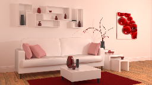

Adversarial Monte Carlo Denoising with Conditioned auxliary feature modulation - Test Suite Overview
The following scenes were rendered with the Tungsten renderer and denoised using several different apporaches.
All techniques use auxiliary buffers specified by their papers and code. KPCN denotes [Bako et al.2017]; RAE denotes [Chaitanya et al.2017]; NFOR denotes [Bitterli et al.2016].
The results include input rendered spanning 4, 16, 32, 64, 128 sample per pixel. Metrics include SSIM, PSNR, RMSE.

bathroom2

coffee

cornell-box

curly-hair

dragon

furball

hair-curl

kitchen

lamp

living-room-3
living-room-3

material-testball

staircase2

straight-hair

teapot-full

teapot

veach-ajar

veach-mis
Acknowledgements
We would like to thank NFOR for their dataset and interactive viewer.